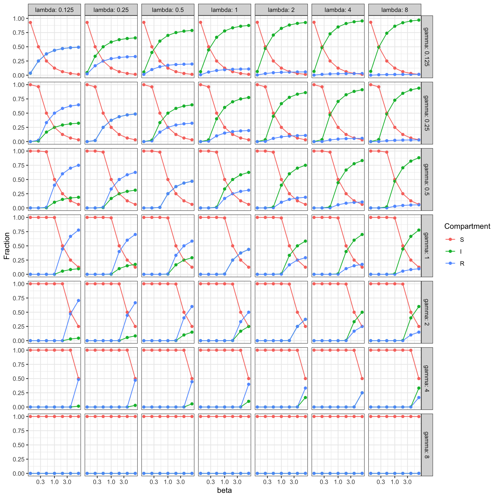
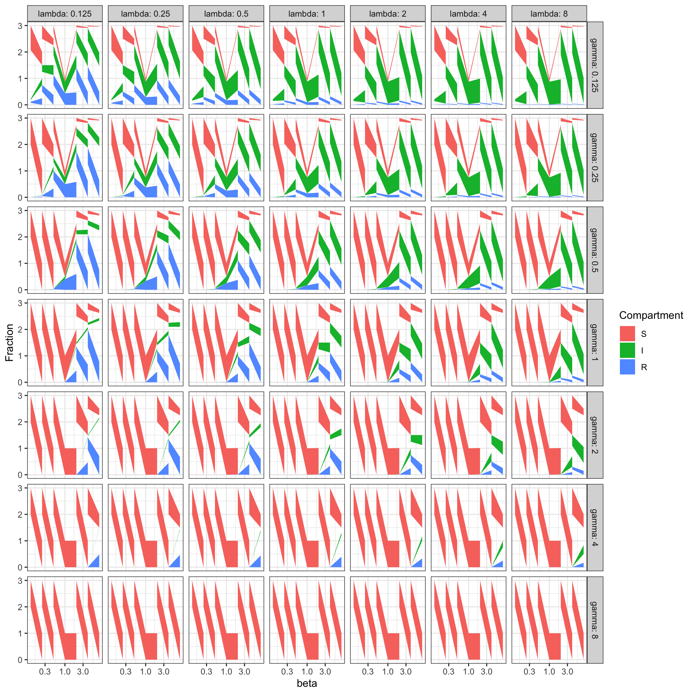
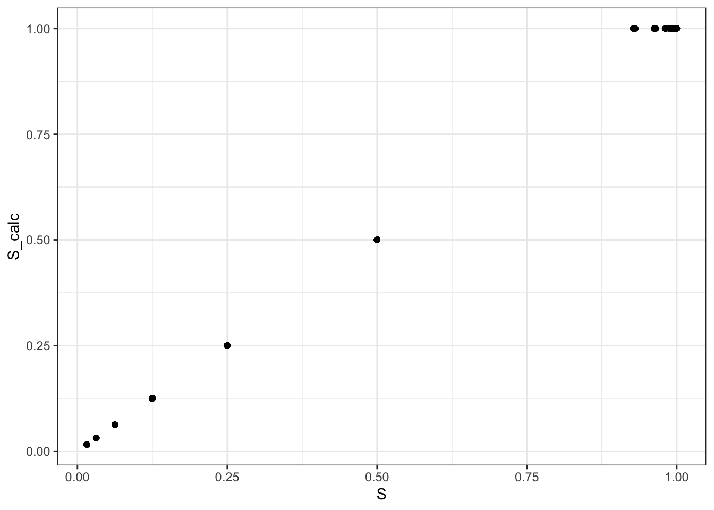
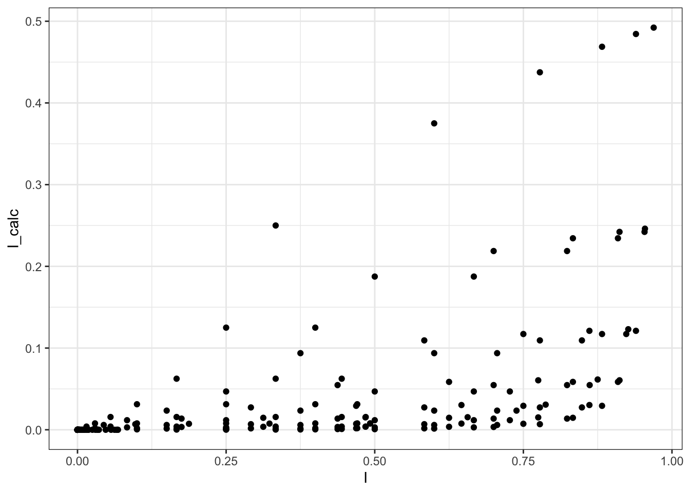
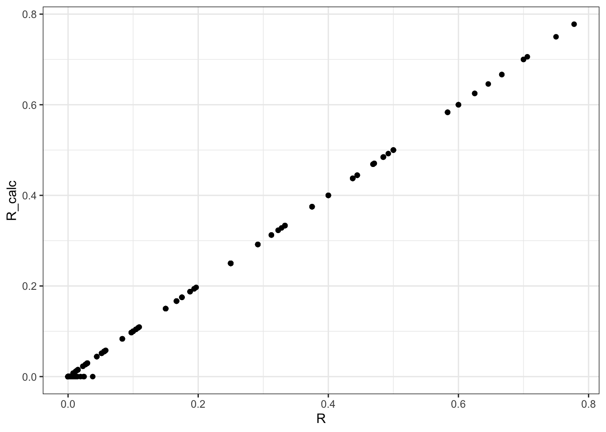
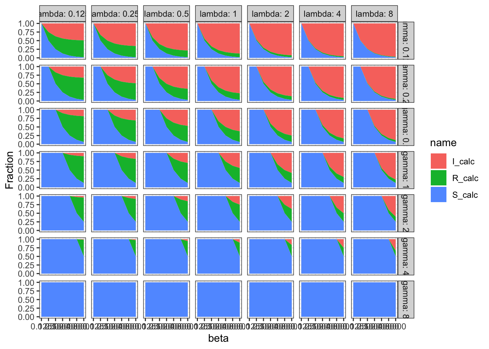

library('ggplot2')
library('tidyverse')
library('deSolve')
theme_set(theme_bw())Loading the required libraries
Simulate ODEs
sir_ode_deterministic <- function(t, state, pars) {
with(as.list(c(state, pars)), {
dS <- - beta * I * S + lambda * R
dI <- beta * I * S - gamma * I
dR <- gamma * I - lambda * R
return(list(c(dS = dS, dI = dI, dR = dR)))
})
}
infected_initial <- 0.5
initial_condition <-
c(S = 1 - infected_initial,
I = infected_initial,
R = 0)
step_length <- 1
max_time <- 100
timepoints <- seq(0, max_time, by = step_length)
grid_values <- 2^(-1:1)
grid_values <- 2^(-2:2)
grid_values <- 2^(-3:3)
result <- tibble()
for(beta in grid_values) {
for(gamma in grid_values) {
for(lambda in grid_values) {
parameters <- list(beta = beta,
gamma = gamma,
lambda = lambda)
solution <- ode(y = initial_condition,
times = timepoints,
func = sir_ode_deterministic,
parms = parameters) %>%
unclass %>% as_tibble
solution$beta <- beta
solution$gamma <- gamma
solution$lambda <- lambda
result <- rbind(result, solution)
}
}
}
result <- pivot_longer(result, cols = c('S', 'I', 'R'))
last <- result[result$time == max_time, ]
last$name <- factor(last$name, levels = c('S', 'I', 'R'))
last %>%
ggplot(aes(beta, value, colour = name)) + geom_point() + geom_line() +
facet_grid(rows = vars(gamma), cols = vars(lambda), labeller = label_both) +
ylab('Fraction') + xlab('beta') + labs(colour = 'Compartment') +
scale_x_continuous(trans='log10')
last %>%
ggplot(aes(x = beta, y = value, fill = name)) + geom_area() +
facet_grid(rows = vars(gamma), cols = vars(lambda), labeller = label_both) +
ylab('Fraction') + xlab('beta') + labs(fill = 'Compartment') +
scale_x_continuous(trans='log10')
ss <- last %>% group_by(beta, gamma, lambda) %>% summarise(ss = sum(value))`summarise()` has grouped output by 'beta', 'gamma'. You can override using the
`.groups` argument.Analytical approach
Solution in terms of parameters in red.
Equilibrium conditions:
\[S + I + R = 1 \qquad (1)\] \[0 = -\beta I S + \lambda R \qquad (2)\] \[0 = \beta I S - \gamma I \qquad (3)\] \[0 = \gamma I - \lambda R \qquad (4)\]
Algebraic transformation:
\[ R = 1 - S - I \qquad (1b)\] \[ S = \gamma / \beta \qquad (3b)\]
Plugging in:
\[ (3b) \rightarrow (2): I = \lambda / \gamma R \qquad (5)\] \[ (1b) \rightarrow (5): I = \frac{\lambda(\beta - \gamma)}{\beta(\gamma + \lambda)} \qquad (6)\] \[ (3b) + (6) \rightarrow (1b): R = \frac{\gamma(\beta - \gamma)}{\beta(\gamma + \lambda)} \qquad (7)\]
Plots
last_w <- pivot_wider(last, names_from = name, values_from = value)
last_w$S_calc <- pmin(1, last_w$gamma / last_w$beta)
last_w$I_calc <- pmax(0, pmin(1, with(last_w, (lambda * (beta - gamma))) / (beta * (gamma + lambda))))
last_w$R_calc <- pmax(0, pmin(1, with(last_w, (gamma * (beta - gamma)) / (beta * (gamma + lambda)))))
ggplot(last_w, aes(S, S_calc)) + geom_point()
ggplot(last_w, aes(I, I_calc)) + geom_point()
ggplot(last_w, aes(R, R_calc)) + geom_point()
last_w$I_calc <- 1 - last_w$S_calc - last_w$R_calc
last <- pivot_longer(last_w, cols = c('S_calc', 'I_calc', 'R_calc'))
glimpse(last)Rows: 1,029
Columns: 9
$ time <dbl> 100, 100, 100, 100, 100, 100, 100, 100, 100, 100, 100, 100, 100…
$ beta <dbl> 0.125, 0.125, 0.125, 0.125, 0.125, 0.125, 0.125, 0.125, 0.125, …
$ gamma <dbl> 0.125, 0.125, 0.125, 0.125, 0.125, 0.125, 0.125, 0.125, 0.125, …
$ lambda <dbl> 0.125, 0.125, 0.125, 0.250, 0.250, 0.250, 0.500, 0.500, 0.500, …
$ S <dbl> 0.9273226, 0.9273226, 0.9273226, 0.9279320, 0.9279320, 0.927932…
$ I <dbl> 3.481509e-02, 3.481509e-02, 3.481509e-02, 4.742894e-02, 4.74289…
$ R <dbl> 3.786233e-02, 3.786233e-02, 3.786233e-02, 2.463904e-02, 2.46390…
$ name <chr> "S_calc", "I_calc", "R_calc", "S_calc", "I_calc", "R_calc", "S_…
$ value <dbl> 1, 0, 0, 1, 0, 0, 1, 0, 0, 1, 0, 0, 1, 0, 0, 1, 0, 0, 1, 0, 0, …last %>%
ggplot(aes(x = beta, y = value, fill = name)) + geom_area() +
facet_grid(rows = vars(gamma), cols = vars(lambda), labeller = label_both) +
ylab('Fraction') + xlab('beta') + labs(colour = 'Compartment') +
scale_x_continuous(trans='log10')